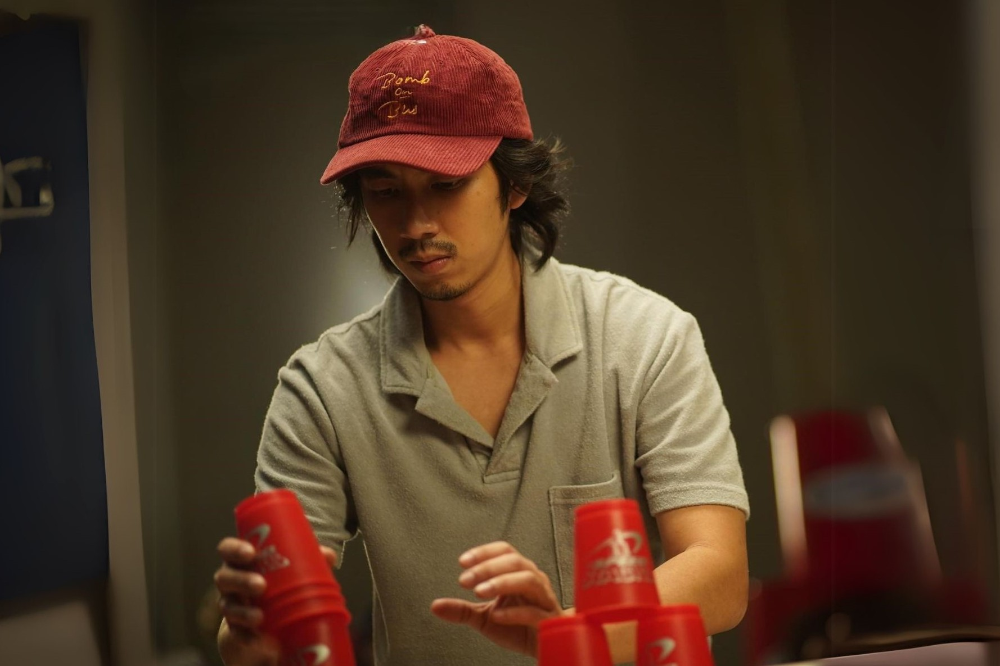
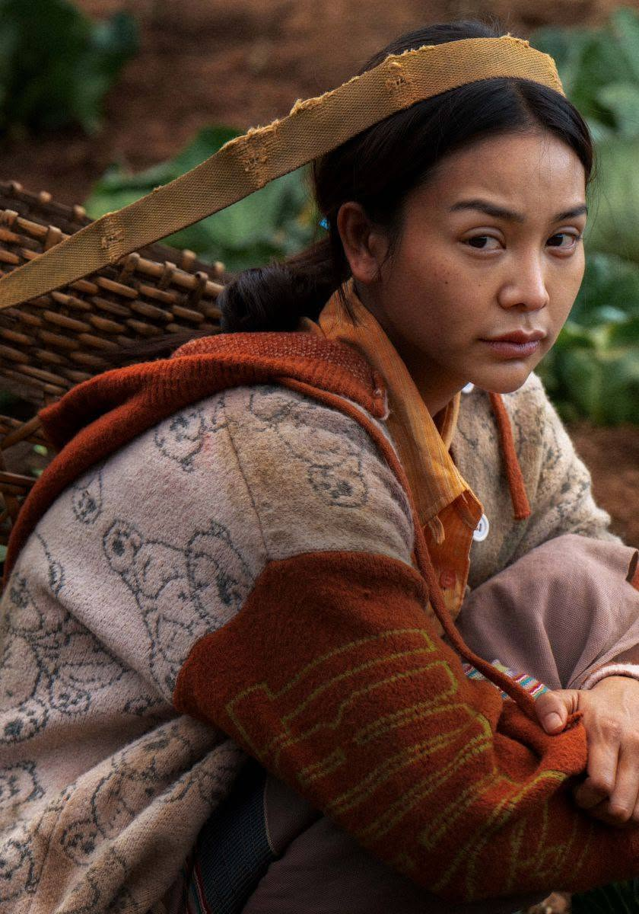

THAT STAY
COLLECTION / THAI FILMS
Thai Films
Characters
ตัวละครไทยที่ทิ้งบางความรู้สึกไว้กับเรา บางตัวละครมักเจอเรื่องราว
หรือเกิดความรู้สึกที่เป็นเรื่องใกล้ตัว ให้ความรู้สึกเหมือนเกิดขึ้นกับตัวเองจริงๆ
PERSONAL ARCHIVE08 CHARACTERS
 01VIEW STORY ↗
01VIEW STORY ↗น้ำ
การเติบโต ความรัก ความกล้าที่จะเปลี่ยนแปลงตัวเอง
02VIEW STORY ↗
ดากานดา
ความสัมพันธ์ที่เต็มไปด้วยความรู้สึกที่ไม่ได้พูดออกมา
03VIEW STORY ↗
มิว
เผชิญกับความรัก ความสูญเสีย และการยอมรับตัวเอง

04VIEW STORY ↗เกา
เรียนรู้การใช้ชีวิตและดูแลความสัมพันธ์นอกเหนือจากสิ่งที่ตัวเองถนัด
05VIEW STORY ↗
ครูสอง
ความโดดเดี่ยว ความหวัง และสายสัมพันธ์ที่เกิดขึ้นผ่านเรื่องราวของใครอีกคน
06VIEW STORY ↗
กู๋โส่ย
เป็นตัวละครที่สะท้อนข้อบกพร่องและความซับซ้อนของคนในครอบครัว
07VIEW STORY ↗
ยุ่น
เป็นหนังเรื่องแรกที่รู้จักอาชีพกราฟิก

08VIEW STORY ↗โหม๋
เส้นแบ่งระหว่างความถูกต้องกับความต้องการ